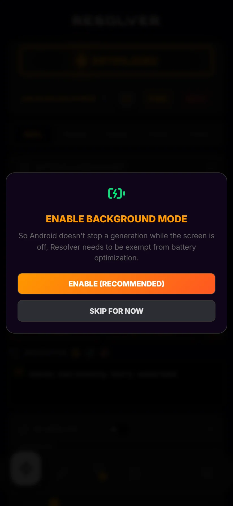

Docs / Advanced
Background & Notifications
Start a big batch, lock the phone, put it in your pocket. Resolver keeps collecting your images in the background and tells you when they’re done.
How it keeps going
While a job runs, Resolver starts an Android foreground service: the progress notification you see. It keeps the phone’s processor and Wi-Fi awake, so Android doesn’t pause the app, and the app keeps asking Forge how far it is. Your PC does the work either way; the phone only needs to stay connected to collect the result.
Background mode (battery optimization)
Android may still stop apps that use the battery in the background. On first start Resolver asks to be exempt: Enable Background Mode.
- ENABLE (RECOMMENDED) opens Android’s dialog; allow it.
- SKIP FOR NOW: you can do it later with Config → System Settings → IGNORE BATTERY OPTIMIZATIONS.
Samsung, Xiaomi, OnePlus and others have their own battery savers. If jobs still stop with the screen off, look in the phone’s battery settings for Resolver and set it to Unrestricted / No restrictions (and on Samsung, leave it out of Sleeping apps).

Notifications
- Progresswhile a job runs
- A quiet notification with the job and its steps (“Generating: Step 42 / 50”) and a progress bar. Tap it to open the app.
- Generation Completewhen the app is in the background
- A notification (with vibration) when the images are in. ComfyUI jobs say “ComfyUI Generation Complete”.
- Live UpdateAndroid 16 · Config → Experimental
- Shows the progress as a Live Update chip in the status bar. On Samsung phones it also leaves an empty “1 more notification” entry; the app explains how to hide it (Settings › Notifications › Sort and filter notifications › Background activities).
- Notification iconConfig → Interface
- The status-bar icon: Logo, Badge, Bold R or Sparkles.
On Android 13 and later, allow Resolver’s notifications when Android asks (or in the phone’s app settings), or you won’t see them.
If you swipe the app away
Swiping Resolver out of the recent apps ends its progress notification, and the app can no longer collect that job’s images (Forge keeps generating unless told otherwise). Two settings decide what happens next:
- Abort on close or disconnectConfig → Generation · off
- On: Forge’s job is stopped too, when the app is swiped away, on the next start after the app closed or crashed mid-job, and once the connection is back after it was lost mid-job (it keeps trying for up to 10 minutes).
- The queue
- Waiting jobs stay in the Queue tab; tap START BATCH to carry on.
Polling: how often the app asks
- Polling rate200 ms
- While the app is open: how often it asks for progress and the live preview. Lower is smoother but busier (50 ms at least).
- Background polling rate4000 ms
- While the app is in the background. Android slows timers then anyway, so faster than 500 ms gains nothing. Resolver also gets a regular tick from Android to catch up on late checks.
Both are in Config → Generation. If a problem only happens with the screen off, turn on the Debug Log (it marks events with V when the app was in view and H when hidden).